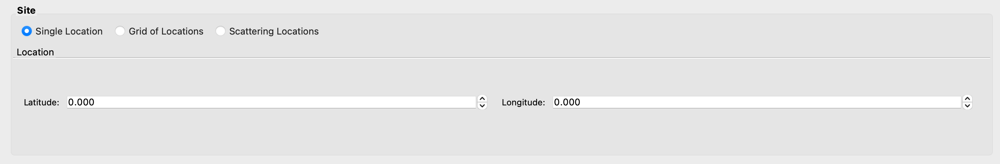
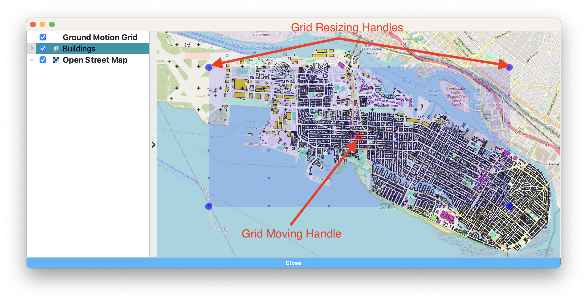
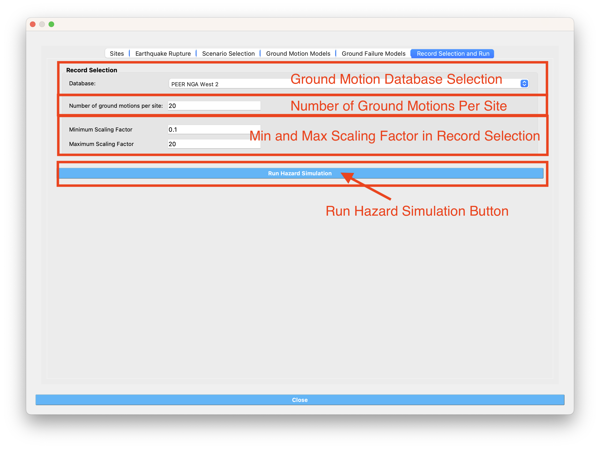

Earthquake Scenario Simulation¶
This tool dialog is where user can enter data on an earthquake scenario and the tool will generate a series of ground motions for a series of points in the area. The application employs OpenSHA, determining which records to select from a ground motion database. The Earthquake Scenario Simulation input panel is given in Fig. 3.1.1 and the individual input panes are discussed below.

Earthquake Scenario Simulation Input panel.¶
Site Definition Parameters
This is where a user defines the geographical locations where ground motion selection will occur. A user can select to input a single location, multiple locations on a grid, or a collection of scattered sites as seen in the Grid Type Selection box in the top-left corner of Fig. 3.1.2.
Single Location
In the Single Location pane, shown in Fig. 3.1.2, the user needs to provide the following inputs:
Location: The latitude and longitude of the site.
Number of Ground Motions per Site: The number of ground motions that will be selected at the site.
Single location site definition.¶
Grid of Locations
In the Grid of Locations input pane, given in Fig. 3.1.3, the user can either manually define a grid, or select a grid on a map. To manually define a grid, the user needs to provide the following input parameters:
Latitude Extents: The minimum and maximum latitude values that the grid will span.
Longitude Extents: The minimum and maximum longitude values that the grid will span.
In addition to defining the geographical extents of the grid, the user must also provide the following inputs:
Number of Ground Motions per Site: The number of ground motions that will be selected at each grid point.
Latitude Discretization: The number of divisions along the latitude direction.
Longitude Discretization: The number of divisions along the longitude direction.

Grid of locations site definition pane.¶
To select a grid on a map, the user needs to click on the Define Grid on Map button and a new Grid Selection Window will appear with the grid, as seen in Fig. 3.1.4. A user can click and drag the Resize and Move handles, shown in Fig. 3.1.4 as blue circles, to resize the grid extents and to move the grid. Changing the grid discretization along the latitude and longitude directions will change the number of grid divisions on the map. Once a grid is defined on the map, the window can be closed and the grid information will be updated in the input pane. To view or modify the grid again, press the Define Grid on Map button and the Grid Selection Window displaying the grid will reappear.
Selection of grid on map.¶
Scattered Locations
In the Scattered Locations input pane, given in Fig. 3.1.5, the user provides a custom list of sites. The following inputs are required:
Site File: The user provided file, in
.csvformat, containing the list of sites and corresponding site data. At a minimum the site file must contain the station number, latitude, and longitude of each site, as seen in the Site Preview Table in Fig. 3.1.5.Site Preview Table: Table providing the information at each site. Apart from the station number, latitude, and longitude at each site, the site file can include other information such as the Vs30 at the site.
Minimum and Maximum Site ID: The minimum and maximum site IDs considered.
Number of Ground Motions per Site: The number of ground motions that will be selected at each site.

Scattered sites input pane.¶
Spatial Correlation and Ground Motion Scaling Factors
This is where the user selects the spatial correlation models, and where the user defines the minimum and maximum scaling factors that are used in ground motion selection. Shown at the top of Fig. 3.1.6, the user has the option to select the Intra- and Inter-event Spatial Correlation Models. Spatial correlation ensures that ground motions at different locations will share similar characteristics. The following Inter-event Spatial Correlation Models are available:
Baker & Jayaram (2008)
and the following Intra-event Spatial Correlation Models are available:
Markhvida et al. (2017)
Jayaram & Baker (2009)
Loth & Baker (2013)
Special thanks to Dr. Anne Husley for sharing the python package seaturtles, especially for the method of computing the regional ground motion intensity using the Markhvida et al. (2017) and Baker & Jayaram (2008) correlation models.
The Ground Motion Record Scaling Bounds, shown at the bottom of Fig. 3.1.6, are the minimum and maximum scaling factors that intensity measures can be scaled by during the ground motion selection process.

Spatial correlation and ground motion selection scaling factors.¶
Ground Motion Record Database
Ground motion records are selected from a ground motion database. Currently, only the PEER NGA-West2 database is available, shown in the Ground Motion Record Database combo box in Fig. 3.1.7. Alternatively, a user can select None to skip ground motion selection altogether. In that case, only the intensity measures will be saved at each location.
Ground motion records database.¶
Ground Motion Prediction Equations
Ground motion prediction equations estimate the intensity of ground shaking that may occur at a site. The Ground Motion Prediction Equation combo box, shown in Fig. 3.1.8, contains the following ground motion prediction equations:
Abrahamson, Silva & Kamai (2014)
Boore, Stewart, Seyhan & Atkinson (2014)
Campbell & Bozorgnia (2014)
Chiou & Youngs (2014)

Ground motion prediction equations.¶
Earthquake Source
This is where the user defines the earthquake rupture characteristics. In the Rupture Type combo box, shown in Fig. 3.1.9, point source and UCERF earthquake rupture forecast models are available.
Point Source
The Point Source pane, shown in Fig. 3.1.9, requires the following inputs:
Magnitude: Magnitude of the earthquake.
Location and Depth: Location and depth of earthquake rupture.
Rupture Geometry: Average dip and rake of rupture.

Point source earthquake rupture.¶
UCERF Earthquake Rupture Forecast
The UCERF Earthquake Rupture Forecast pane, shown in Fig. 3.1.10, requires the following inputs:
Number of scenarios: The number of rupture scenarios considered.
Magnitude and Distance: Magnitude of the earthquake and the maximum distance, in km, from a site.
Name: Users can specify keywords here to search for specific earthquakes.
Earthquake Forecast Model: Type of earthquake forecast model.
The types of UCERF earthquake forecast models available are:
WGCEP (2007) UCERF2 - Single Branch
Mean UCERF3
Mean UCERF3 FM3.1
Mean UCERF3 FM3.2

Earthquake rupture forecast.¶
OpenQuake Scenario-Based
The OpenQuake Scenario-Based pane, shown in Fig. 3.1.11, requires the following inputs:
OpenQuake Version: Version of OpenQuake (currently available 3.10, 3.11, 3.12, and latest minor version is supported).
Rupture File: A xml file (NRML format) defining an earthquake source.
Rupture Meshsize: Mesh size for line sources.
Area Meshsize: Mesh size for area sources.
Maximum Distance: Maximum considered distance from source to site.

OpenQuake Scenario-Based Input.¶
OpenQuake Classcial PSHA
The OpenQuake Classcial PSHA pane, shown in Fig. 3.1.12, requires the following inputs:
OpenQuake Version: Version of OpenQuake (currently available 3.10, 3.11, 3.12, and latest minor version is supported).
Source Logic Tree: A xml file (NRML format) defining a logic tree model for seismic sources.
Source Model Folder: A directory hosting the seismic sources defined in the source logic tree.
Rupture Meshsize: Mesh size for line sources.
Area Meshsize: Mesh size for area sources.
Maximum Distance: Maximum considered distance from source to site.
GMPE Logic Tree: A xml file (NRML format) defining a logic tree model for ground motion prediction equations.
Return Period: Return period of the PSHA.
Seed: Seed in generating ground motion maps.
Quantiles: Quantile levels of ground motion intensity measures in the output (e.g., uniform hazard spectra).
Investigation Time: time period for computing the probability of exceedance
Output: Checkboxes for Individual hazard curve, Mean hazard curve, Hazard map, and Uniform hazard spectra

OpenQuake Classical PSHA Input.¶
Hazard Occurrence
The Hazard Occurrence pane, shown in Fig. 3.1.13, requires the following inputs:
Hazard occurrence model: Currently Manzour and Davidson (2016) ([Manzour2016]) is available.
- Forecast model: Type of earthquake forecast model where the candidate earthquake scenarios are collected from.
WGCEP (2007) UCERF2 - Single Branch
Mean UCERF3
Mean UCERF3 FM3.1
Mean UCERF3 FM3.2
Candidate earthquake number: Number of earthquakes used as candidates to select from.
Reduced earthquake number: Maximum number of selected (reduced) earthquakes to recover the hazard curves.
Reduced motion number: Maximum number of selected (reduced) ground motions per individual site to recover the site hazard curve.
Hazard curve input: Types of reference hazard curves: (1) Inferred and (2) User-defined. Inferred hazard curves are fetched from National seismic hazar map project ([Peterson2020]). User-defined hazard curves should be summarized in a csv file following the
template.National seismic hazard map: Version of national seismic hazard map used to infer reference site-specific hazard curves.
Hazard curve file: User-defined hazard curve file.
Intensity measure: The intensity measure type used in reference hazard curves.
Hazard curve Sa period: Period of the response acceleration Sa if the intensity measure type is Sa.
Return periods (yr): A list of return periods in year used in minimizing the difference between recovered and reference hazard curves (seperated by “,”).

Hazard Occurrence Input.¶
Intensity Measure and Period Points
The Intensity Measure and Period Points pane, shown in Fig. 3.1.14, requires the following inputs:
Intensity Measure Type: Type of intensity measure. The Spectral Acceleration (SA) and Peak Ground Acceleration (PGA) intensity measures are available.
Period Points: List of periods, in seconds, that are used in the ground motion selection procedure.

Intensity measure and period.¶
Output Directory and Run Button
Shown at the bottom of Fig. 3.1.15, the Run Hazard Simulation button starts the ground motion selection application. The Output Directory box, provided in Fig. 3.1.15, allows the user to select a directory that will contain the input and output files of the earthquake scenario simulation.

Earthquake Scenario Simulation Output Directory.¶
- The earthquake scenario simulation is run via a Python script. When the Run Hazard Simulation button is pressed, text output from the script will appear in the Program Output console at the bottom of the application.
Upon successful completion of the earthquake scenario simulation, results from the simulation are in the Output Directory folder that is specified above, as shown in Fig. 3.1.15. The final output is a
.csvfile calledEventGrid.csv. TheEventGrid.csvfile contains the grid points and their locations and file names. Each grid point is assigned a.csvfile containing a list of the ground motions at the grid point and their scaling factors. If applicable, the corresponding ground motion records, inJSONformat, are also in the Output Directory directoy. Next, theEventGrid.csvis post-processed, and a new layer containing the ground motions is added to the GIS widget. Shown on the right-hand side of Fig. 3.1.16, the grid points are represented with a cross symbol. Clicking on a grid point will produce a popup with information about the ground motions at that point.

Post-processing output and grid visualization.¶